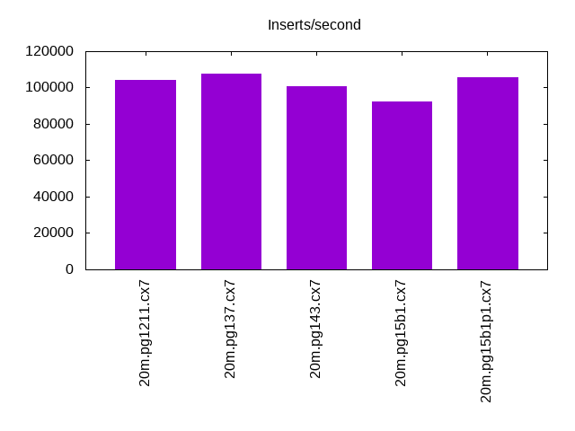
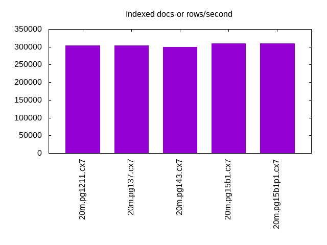
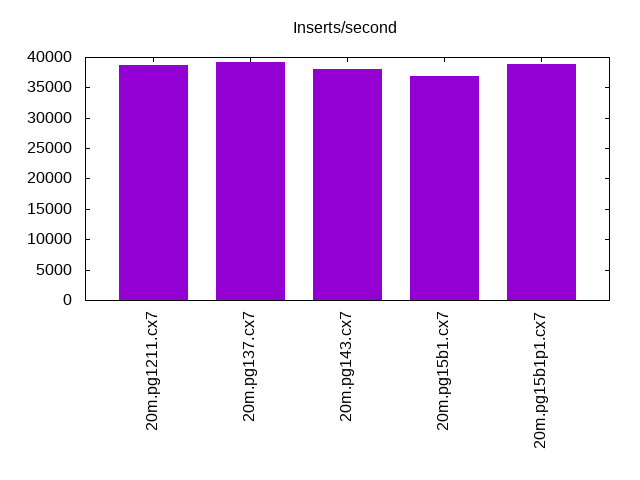
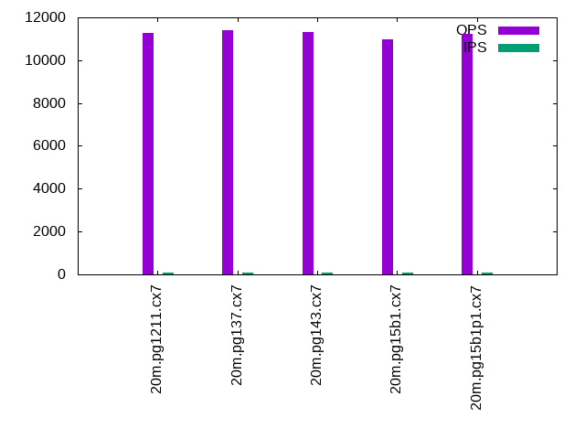
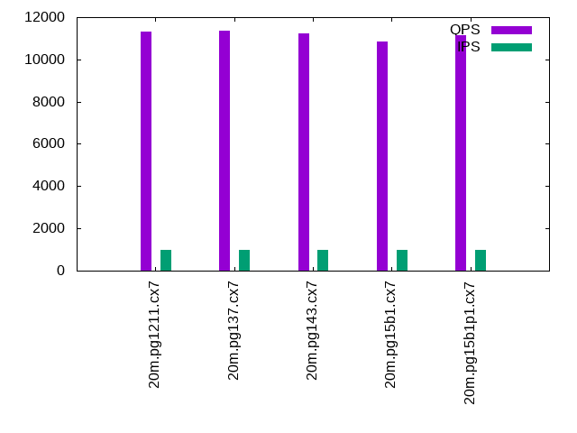

This is a report for the insert benchmark with 20M docs and 1 client(s). It is generated by scripts (bash, awk, sed) and Tufte might not be impressed. An overview of the insert benchmark is here and a short update is here. Below, by DBMS, I mean DBMS+version.config. An example is my8020.c10b40 where my means MySQL, 8020 is version 8.0.20 and c10b40 is the name for the configuration file.
The test server is an Intel NUC with 4 cores, 16G RAM and a Samsung 970 EVO. More details are here. Clients and the DBMS share one server. The per-database configs are in the per-database subdirectories here.
The tested DBMS are:
The numbers are inserts/s for l.i0 and l.i1, indexed docs (or rows) /s for l.x and queries/s for q*.2. The values are the average rate over the entire test for inserts (IPS) and queries (QPS). The range of values for IPS and QPS is split into 3 parts: bottom 25%, middle 50%, top 25%. Values in the bottom 25% have a red background, values in the top 25% have a green background and values in the middle have no color. A gray background is used for values that can be ignored because the DBMS did not sustain the target insert rate. Red backgrounds are not used when the minimum value is within 80% of the max value.
| dbms | l.i0 | l.x | l.i1 | q100.1 | q500.1 | q1000.1 |
|---|---|---|---|---|---|---|
| 20m.pg1211.cx7 | 104167 | 304545 | 38760 | 11285 | 11194 | 11306 |
| 20m.pg137.cx7 | 107527 | 304545 | 39216 | 11411 | 11371 | 11379 |
| 20m.pg143.cx7 | 100502 | 300000 | 37951 | 11328 | 11178 | 11216 |
| 20m.pg15b1.cx7 | 92592 | 309231 | 36832 | 10955 | 10970 | 10839 |
| 20m.pg15b1p1.cx7 | 105820 | 309231 | 38835 | 11213 | 11192 | 11162 |
This lists the average rate of inserts/s for the tests that do inserts concurrent with queries. For such tests the query rate is listed in the table above. The read+write tests are setup so that the insert rate should match the target rate every second. Cells that are not at least 95% of the target have a red background to indicate a failure to satisfy the target.
| dbms | q100.1 | q500.1 | q1000.1 |
|---|---|---|---|
| pg1211.cx7 | 100 | 499 | 999 |
| pg137.cx7 | 100 | 499 | 999 |
| pg143.cx7 | 100 | 500 | 999 |
| pg15b1.cx7 | 100 | 500 | 999 |
| pg15b1p1.cx7 | 100 | 500 | 999 |
| target | 100 | 500 | 1000 |
l.i0: load without secondary indexes. Graphs for performance per 1-second interval are here.
Average throughput:
Insert response time histogram: each cell has the percentage of responses that take <= the time in the header and max is the max response time in seconds. For the max column values in the top 25% of the range have a red background and in the bottom 25% of the range have a green background. The red background is not used when the min value is within 80% of the max value.
| dbms | 256us | 1ms | 4ms | 16ms | 64ms | 256ms | 1s | 4s | 16s | gt | max |
|---|---|---|---|---|---|---|---|---|---|---|---|
| pg1211.cx7 | 96.705 | 3.294 | 0.001 | 0.004 | |||||||
| pg137.cx7 | 98.528 | 1.472 | 0.004 | ||||||||
| pg143.cx7 | 77.983 | 22.017 | 0.001 | 0.004 | |||||||
| pg15b1.cx7 | 0.785 | 99.215 | 0.003 | ||||||||
| pg15b1p1.cx7 | 98.209 | 1.791 | 0.001 | 0.005 |
Performance metrics for the DBMS listed above. Some are normalized by throughput, others are not. Legend for results is here.
ips qps rps rmbps wps wmbps rpq rkbpq wpi wkbpi csps cpups cspq cpupq dbgb1 dbgb2 rss maxop p50 p99 tag 104167 0 0 0.0 66.1 43.2 0.000 0.000 0.001 0.425 12595 43.2 0.121 17 1.9 5.2 0.0 0.004 104328 84984 20m.pg1211.cx7 107527 0 0 0.0 69.2 45.1 0.000 0.000 0.001 0.429 13040 43.8 0.121 16 1.9 5.2 0.0 0.004 108216 86105 20m.pg137.cx7 100502 0 0 0.0 66.1 43.3 0.000 0.000 0.001 0.441 12161 45.0 0.121 18 1.9 5.2 0.0 0.004 100691 79113 20m.pg143.cx7 92592 0 0 0.0 60.7 39.5 0.000 0.000 0.001 0.437 11089 42.6 0.120 18 1.9 5.2 0.0 0.003 92799 73220 20m.pg15b1.cx7 105820 0 0 0.0 67.6 44.2 0.000 0.000 0.001 0.428 12785 44.6 0.121 17 1.9 5.2 0.0 0.005 106184 84510 20m.pg15b1p1.cx7
l.x: create secondary indexes.
Average throughput:
Performance metrics for the DBMS listed above. Some are normalized by throughput, others are not. Legend for results is here.
ips qps rps rmbps wps wmbps rpq rkbpq wpi wkbpi csps cpups cspq cpupq dbgb1 dbgb2 rss maxop p50 p99 tag 304545 0 0 0.0 64.9 70.2 0.000 0.000 0.000 0.236 1945 24.7 0.006 3 3.7 8.6 0.0 0.002 NA NA 20m.pg1211.cx7 304545 0 0 0.0 64.1 65.7 0.000 0.000 0.000 0.221 1963 24.8 0.006 3 3.7 8.6 0.0 0.002 NA NA 20m.pg137.cx7 300000 0 0 0.0 58.9 62.3 0.000 0.000 0.000 0.212 1907 24.8 0.006 3 3.7 8.6 0.0 0.002 NA NA 20m.pg143.cx7 309231 0 0 0.0 69.6 73.4 0.000 0.000 0.000 0.243 2014 24.8 0.007 3 3.7 8.6 0.0 0.002 NA NA 20m.pg15b1.cx7 309231 0 0 0.0 75.2 78.7 0.000 0.000 0.000 0.261 2038 24.6 0.007 3 3.7 8.6 0.0 0.002 NA NA 20m.pg15b1p1.cx7
l.i1: continue load after secondary indexes created. Graphs for performance per 1-second interval are here.
Average throughput:
Insert response time histogram: each cell has the percentage of responses that take <= the time in the header and max is the max response time in seconds. For the max column values in the top 25% of the range have a red background and in the bottom 25% of the range have a green background. The red background is not used when the min value is within 80% of the max value.
| dbms | 256us | 1ms | 4ms | 16ms | 64ms | 256ms | 1s | 4s | 16s | gt | max |
|---|---|---|---|---|---|---|---|---|---|---|---|
| pg1211.cx7 | 99.873 | 0.104 | 0.021 | 0.001 | nonzero | 0.575 | |||||
| pg137.cx7 | 99.861 | 0.116 | 0.023 | 0.001 | 0.168 | ||||||
| pg143.cx7 | 99.869 | 0.110 | 0.020 | 0.001 | nonzero | 0.269 | |||||
| pg15b1.cx7 | 99.883 | 0.094 | 0.022 | nonzero | nonzero | 0.259 | |||||
| pg15b1p1.cx7 | 99.886 | 0.090 | 0.023 | 0.001 | nonzero | 0.423 |
Performance metrics for the DBMS listed above. Some are normalized by throughput, others are not. Legend for results is here.
ips qps rps rmbps wps wmbps rpq rkbpq wpi wkbpi csps cpups cspq cpupq dbgb1 dbgb2 rss maxop p50 p99 tag 38760 0 0 0.0 198.2 65.9 0.000 0.000 0.005 1.742 9851 35.7 0.254 37 8.2 19.5 1.1 0.575 40156 11486 20m.pg1211.cx7 39216 0 0 0.0 202.3 68.3 0.000 0.000 0.005 1.784 9933 35.8 0.253 37 8.2 19.9 0.0 0.168 40506 9488 20m.pg137.cx7 37951 0 0 0.0 154.8 64.0 0.000 0.000 0.004 1.726 9554 36.1 0.252 38 8.2 20.8 0.0 0.269 39420 16082 20m.pg143.cx7 36832 0 0 0.0 169.7 63.7 0.000 0.000 0.005 1.771 9326 36.1 0.253 39 8.2 21.2 0.0 0.259 38058 16130 20m.pg15b1.cx7 38835 0 0 0.0 150.2 63.3 0.000 0.000 0.004 1.668 9812 36.5 0.253 38 8.2 20.4 0.0 0.423 40257 11138 20m.pg15b1p1.cx7
q100.1: range queries with 100 insert/s per client. Graphs for performance per 1-second interval are here.
Average throughput:
Query response time histogram: each cell has the percentage of responses that take <= the time in the header and max is the max response time in seconds. For max values in the top 25% of the range have a red background and in the bottom 25% of the range have a green background. The red background is not used when the min value is within 80% of the max value.
| dbms | 256us | 1ms | 4ms | 16ms | 64ms | 256ms | 1s | 4s | 16s | gt | max |
|---|---|---|---|---|---|---|---|---|---|---|---|
| pg1211.cx7 | 99.997 | 0.002 | 0.001 | nonzero | 0.007 | ||||||
| pg137.cx7 | 99.998 | 0.002 | 0.001 | nonzero | 0.005 | ||||||
| pg143.cx7 | 99.996 | 0.003 | 0.001 | nonzero | 0.007 | ||||||
| pg15b1.cx7 | 99.997 | 0.002 | 0.001 | nonzero | 0.004 | ||||||
| pg15b1p1.cx7 | 99.997 | 0.002 | 0.001 | nonzero | 0.004 |
Insert response time histogram: each cell has the percentage of responses that take <= the time in the header and max is the max response time in seconds. For max values in the top 25% of the range have a red background and in the bottom 25% of the range have a green background. The red background is not used when the min value is within 80% of the max value.
| dbms | 256us | 1ms | 4ms | 16ms | 64ms | 256ms | 1s | 4s | 16s | gt | max |
|---|---|---|---|---|---|---|---|---|---|---|---|
| pg1211.cx7 | 99.993 | 0.007 | 0.005 | ||||||||
| pg137.cx7 | 99.993 | 0.007 | 0.005 | ||||||||
| pg143.cx7 | 99.979 | 0.021 | 0.005 | ||||||||
| pg15b1.cx7 | 99.958 | 0.042 | 0.006 | ||||||||
| pg15b1p1.cx7 | 99.979 | 0.021 | 0.005 |
Performance metrics for the DBMS listed above. Some are normalized by throughput, others are not. Legend for results is here.
ips qps rps rmbps wps wmbps rpq rkbpq wpi wkbpi csps cpups cspq cpupq dbgb1 dbgb2 rss maxop p50 p99 tag 100 11285 0 0.0 205.6 4.6 0.000 0.000 2.058 47.288 43369 27.9 3.843 99 8.3 10.3 0.0 0.007 11284 11172 20m.pg1211.cx7 100 11411 0 0.0 205.0 4.3 0.000 0.000 2.054 43.949 43863 28.0 3.844 98 8.3 10.2 0.0 0.005 11411 11268 20m.pg137.cx7 100 11328 0 0.0 196.7 4.4 0.000 0.000 1.969 44.644 43479 26.7 3.838 94 8.3 10.8 0.0 0.007 11331 11204 20m.pg143.cx7 100 10955 0 0.0 195.5 4.3 0.000 0.000 1.956 44.560 42026 26.5 3.836 97 8.3 10.8 0.0 0.004 10952 10840 20m.pg15b1.cx7 100 11213 0 0.0 198.8 4.4 0.000 0.000 1.990 44.617 43010 26.6 3.836 95 8.3 10.8 0.0 0.004 11220 11092 20m.pg15b1p1.cx7
q500.1: range queries with 500 insert/s per client. Graphs for performance per 1-second interval are here.
Average throughput:
Query response time histogram: each cell has the percentage of responses that take <= the time in the header and max is the max response time in seconds. For max values in the top 25% of the range have a red background and in the bottom 25% of the range have a green background. The red background is not used when the min value is within 80% of the max value.
| dbms | 256us | 1ms | 4ms | 16ms | 64ms | 256ms | 1s | 4s | 16s | gt | max |
|---|---|---|---|---|---|---|---|---|---|---|---|
| pg1211.cx7 | 99.984 | 0.011 | 0.005 | nonzero | 0.006 | ||||||
| pg137.cx7 | 99.984 | 0.011 | 0.005 | nonzero | 0.006 | ||||||
| pg143.cx7 | 99.979 | 0.015 | 0.006 | nonzero | 0.005 | ||||||
| pg15b1.cx7 | 99.980 | 0.014 | 0.006 | nonzero | 0.005 | ||||||
| pg15b1p1.cx7 | 99.981 | 0.014 | 0.005 | nonzero | 0.005 |
Insert response time histogram: each cell has the percentage of responses that take <= the time in the header and max is the max response time in seconds. For max values in the top 25% of the range have a red background and in the bottom 25% of the range have a green background. The red background is not used when the min value is within 80% of the max value.
| dbms | 256us | 1ms | 4ms | 16ms | 64ms | 256ms | 1s | 4s | 16s | gt | max |
|---|---|---|---|---|---|---|---|---|---|---|---|
| pg1211.cx7 | 99.994 | 0.004 | 0.001 | 0.017 | |||||||
| pg137.cx7 | 99.993 | 0.007 | 0.006 | ||||||||
| pg143.cx7 | 99.994 | 0.006 | 0.006 | ||||||||
| pg15b1.cx7 | 99.979 | 0.021 | 0.010 | ||||||||
| pg15b1p1.cx7 | 99.983 | 0.017 | 0.009 |
Performance metrics for the DBMS listed above. Some are normalized by throughput, others are not. Legend for results is here.
ips qps rps rmbps wps wmbps rpq rkbpq wpi wkbpi csps cpups cspq cpupq dbgb1 dbgb2 rss maxop p50 p99 tag 499 11194 0 0.0 374.2 13.0 0.000 0.000 0.749 26.709 43148 28.5 3.855 102 9.7 12.7 0.0 0.006 11203 11044 20m.pg1211.cx7 499 11371 0 0.0 377.2 13.1 0.000 0.000 0.755 26.786 43819 28.6 3.854 101 9.7 12.7 0.0 0.006 11379 11220 20m.pg137.cx7 500 11178 0 0.0 376.7 12.4 0.000 0.000 0.754 25.402 43026 27.2 3.849 97 9.7 13.3 0.0 0.005 11176 11060 20m.pg143.cx7 500 10970 0 0.0 375.6 12.3 0.000 0.000 0.752 25.311 42203 27.0 3.847 98 9.7 13.3 0.0 0.005 10968 10844 20m.pg15b1.cx7 500 11192 0 0.0 375.7 12.4 0.000 0.000 0.752 25.387 43045 27.0 3.846 96 9.7 13.3 0.0 0.005 11189 11060 20m.pg15b1p1.cx7
q1000.1: range queries with 1000 insert/s per client. Graphs for performance per 1-second interval are here.
Average throughput:
Query response time histogram: each cell has the percentage of responses that take <= the time in the header and max is the max response time in seconds. For max values in the top 25% of the range have a red background and in the bottom 25% of the range have a green background. The red background is not used when the min value is within 80% of the max value.
| dbms | 256us | 1ms | 4ms | 16ms | 64ms | 256ms | 1s | 4s | 16s | gt | max |
|---|---|---|---|---|---|---|---|---|---|---|---|
| pg1211.cx7 | 99.956 | 0.034 | 0.009 | nonzero | 0.007 | ||||||
| pg137.cx7 | 99.956 | 0.035 | 0.009 | nonzero | 0.008 | ||||||
| pg143.cx7 | 99.952 | 0.038 | 0.010 | nonzero | 0.006 | ||||||
| pg15b1.cx7 | 99.952 | 0.038 | 0.010 | nonzero | 0.009 | ||||||
| pg15b1p1.cx7 | 99.954 | 0.036 | 0.010 | nonzero | 0.006 |
Insert response time histogram: each cell has the percentage of responses that take <= the time in the header and max is the max response time in seconds. For max values in the top 25% of the range have a red background and in the bottom 25% of the range have a green background. The red background is not used when the min value is within 80% of the max value.
| dbms | 256us | 1ms | 4ms | 16ms | 64ms | 256ms | 1s | 4s | 16s | gt | max |
|---|---|---|---|---|---|---|---|---|---|---|---|
| pg1211.cx7 | 98.235 | 1.740 | 0.025 | 0.036 | |||||||
| pg137.cx7 | 98.260 | 1.716 | 0.024 | 0.035 | |||||||
| pg143.cx7 | 98.364 | 1.622 | 0.015 | 0.035 | |||||||
| pg15b1.cx7 | 98.267 | 1.718 | 0.015 | 0.036 | |||||||
| pg15b1p1.cx7 | 98.367 | 1.624 | 0.009 | 0.035 |
Performance metrics for the DBMS listed above. Some are normalized by throughput, others are not. Legend for results is here.
ips qps rps rmbps wps wmbps rpq rkbpq wpi wkbpi csps cpups cspq cpupq dbgb1 dbgb2 rss maxop p50 p99 tag 999 11306 7 0.1 482.6 18.8 0.001 0.005 0.483 19.279 43701 29.0 3.865 103 12.0 15.8 0.0 0.007 11315 11140 20m.pg1211.cx7 999 11379 6 0.1 481.7 18.8 0.001 0.005 0.482 19.283 43990 29.1 3.866 102 12.0 15.8 0.0 0.008 11380 11191 20m.pg137.cx7 999 11216 6 0.1 512.3 17.5 0.001 0.005 0.513 17.933 43293 27.6 3.860 98 12.0 16.7 0.0 0.006 11220 11060 20m.pg143.cx7 999 10839 8 0.1 510.6 17.5 0.001 0.006 0.511 17.902 41835 27.6 3.860 102 12.0 16.7 0.0 0.009 10837 10708 20m.pg15b1.cx7 999 11162 6 0.1 512.0 17.5 0.001 0.005 0.512 17.936 43056 27.5 3.857 99 12.0 16.7 0.0 0.006 11164 11016 20m.pg15b1p1.cx7
l.i0: load without secondary indexes
Performance metrics for all DBMS, not just the ones listed above. Some are normalized by throughput, others are not. Legend for results is here.
ips qps rps rmbps wps wmbps rpq rkbpq wpi wkbpi csps cpups cspq cpupq dbgb1 dbgb2 rss maxop p50 p99 tag 104167 0 0 0.0 66.1 43.2 0.000 0.000 0.001 0.425 12595 43.2 0.121 17 1.9 5.2 0.0 0.004 104328 84984 20m.pg1211.cx7 107527 0 0 0.0 69.2 45.1 0.000 0.000 0.001 0.429 13040 43.8 0.121 16 1.9 5.2 0.0 0.004 108216 86105 20m.pg137.cx7 100502 0 0 0.0 66.1 43.3 0.000 0.000 0.001 0.441 12161 45.0 0.121 18 1.9 5.2 0.0 0.004 100691 79113 20m.pg143.cx7 92592 0 0 0.0 60.7 39.5 0.000 0.000 0.001 0.437 11089 42.6 0.120 18 1.9 5.2 0.0 0.003 92799 73220 20m.pg15b1.cx7 105820 0 0 0.0 67.6 44.2 0.000 0.000 0.001 0.428 12785 44.6 0.121 17 1.9 5.2 0.0 0.005 106184 84510 20m.pg15b1p1.cx7
l.x: create secondary indexes
Performance metrics for all DBMS, not just the ones listed above. Some are normalized by throughput, others are not. Legend for results is here.
ips qps rps rmbps wps wmbps rpq rkbpq wpi wkbpi csps cpups cspq cpupq dbgb1 dbgb2 rss maxop p50 p99 tag 304545 0 0 0.0 64.9 70.2 0.000 0.000 0.000 0.236 1945 24.7 0.006 3 3.7 8.6 0.0 0.002 NA NA 20m.pg1211.cx7 304545 0 0 0.0 64.1 65.7 0.000 0.000 0.000 0.221 1963 24.8 0.006 3 3.7 8.6 0.0 0.002 NA NA 20m.pg137.cx7 300000 0 0 0.0 58.9 62.3 0.000 0.000 0.000 0.212 1907 24.8 0.006 3 3.7 8.6 0.0 0.002 NA NA 20m.pg143.cx7 309231 0 0 0.0 69.6 73.4 0.000 0.000 0.000 0.243 2014 24.8 0.007 3 3.7 8.6 0.0 0.002 NA NA 20m.pg15b1.cx7 309231 0 0 0.0 75.2 78.7 0.000 0.000 0.000 0.261 2038 24.6 0.007 3 3.7 8.6 0.0 0.002 NA NA 20m.pg15b1p1.cx7
l.i1: continue load after secondary indexes created
Performance metrics for all DBMS, not just the ones listed above. Some are normalized by throughput, others are not. Legend for results is here.
ips qps rps rmbps wps wmbps rpq rkbpq wpi wkbpi csps cpups cspq cpupq dbgb1 dbgb2 rss maxop p50 p99 tag 38760 0 0 0.0 198.2 65.9 0.000 0.000 0.005 1.742 9851 35.7 0.254 37 8.2 19.5 1.1 0.575 40156 11486 20m.pg1211.cx7 39216 0 0 0.0 202.3 68.3 0.000 0.000 0.005 1.784 9933 35.8 0.253 37 8.2 19.9 0.0 0.168 40506 9488 20m.pg137.cx7 37951 0 0 0.0 154.8 64.0 0.000 0.000 0.004 1.726 9554 36.1 0.252 38 8.2 20.8 0.0 0.269 39420 16082 20m.pg143.cx7 36832 0 0 0.0 169.7 63.7 0.000 0.000 0.005 1.771 9326 36.1 0.253 39 8.2 21.2 0.0 0.259 38058 16130 20m.pg15b1.cx7 38835 0 0 0.0 150.2 63.3 0.000 0.000 0.004 1.668 9812 36.5 0.253 38 8.2 20.4 0.0 0.423 40257 11138 20m.pg15b1p1.cx7
q100.1: range queries with 100 insert/s per client
Performance metrics for all DBMS, not just the ones listed above. Some are normalized by throughput, others are not. Legend for results is here.
ips qps rps rmbps wps wmbps rpq rkbpq wpi wkbpi csps cpups cspq cpupq dbgb1 dbgb2 rss maxop p50 p99 tag 100 11285 0 0.0 205.6 4.6 0.000 0.000 2.058 47.288 43369 27.9 3.843 99 8.3 10.3 0.0 0.007 11284 11172 20m.pg1211.cx7 100 11411 0 0.0 205.0 4.3 0.000 0.000 2.054 43.949 43863 28.0 3.844 98 8.3 10.2 0.0 0.005 11411 11268 20m.pg137.cx7 100 11328 0 0.0 196.7 4.4 0.000 0.000 1.969 44.644 43479 26.7 3.838 94 8.3 10.8 0.0 0.007 11331 11204 20m.pg143.cx7 100 10955 0 0.0 195.5 4.3 0.000 0.000 1.956 44.560 42026 26.5 3.836 97 8.3 10.8 0.0 0.004 10952 10840 20m.pg15b1.cx7 100 11213 0 0.0 198.8 4.4 0.000 0.000 1.990 44.617 43010 26.6 3.836 95 8.3 10.8 0.0 0.004 11220 11092 20m.pg15b1p1.cx7
q500.1: range queries with 500 insert/s per client
Performance metrics for all DBMS, not just the ones listed above. Some are normalized by throughput, others are not. Legend for results is here.
ips qps rps rmbps wps wmbps rpq rkbpq wpi wkbpi csps cpups cspq cpupq dbgb1 dbgb2 rss maxop p50 p99 tag 499 11194 0 0.0 374.2 13.0 0.000 0.000 0.749 26.709 43148 28.5 3.855 102 9.7 12.7 0.0 0.006 11203 11044 20m.pg1211.cx7 499 11371 0 0.0 377.2 13.1 0.000 0.000 0.755 26.786 43819 28.6 3.854 101 9.7 12.7 0.0 0.006 11379 11220 20m.pg137.cx7 500 11178 0 0.0 376.7 12.4 0.000 0.000 0.754 25.402 43026 27.2 3.849 97 9.7 13.3 0.0 0.005 11176 11060 20m.pg143.cx7 500 10970 0 0.0 375.6 12.3 0.000 0.000 0.752 25.311 42203 27.0 3.847 98 9.7 13.3 0.0 0.005 10968 10844 20m.pg15b1.cx7 500 11192 0 0.0 375.7 12.4 0.000 0.000 0.752 25.387 43045 27.0 3.846 96 9.7 13.3 0.0 0.005 11189 11060 20m.pg15b1p1.cx7
q1000.1: range queries with 1000 insert/s per client
Performance metrics for all DBMS, not just the ones listed above. Some are normalized by throughput, others are not. Legend for results is here.
ips qps rps rmbps wps wmbps rpq rkbpq wpi wkbpi csps cpups cspq cpupq dbgb1 dbgb2 rss maxop p50 p99 tag 999 11306 7 0.1 482.6 18.8 0.001 0.005 0.483 19.279 43701 29.0 3.865 103 12.0 15.8 0.0 0.007 11315 11140 20m.pg1211.cx7 999 11379 6 0.1 481.7 18.8 0.001 0.005 0.482 19.283 43990 29.1 3.866 102 12.0 15.8 0.0 0.008 11380 11191 20m.pg137.cx7 999 11216 6 0.1 512.3 17.5 0.001 0.005 0.513 17.933 43293 27.6 3.860 98 12.0 16.7 0.0 0.006 11220 11060 20m.pg143.cx7 999 10839 8 0.1 510.6 17.5 0.001 0.006 0.511 17.902 41835 27.6 3.860 102 12.0 16.7 0.0 0.009 10837 10708 20m.pg15b1.cx7 999 11162 6 0.1 512.0 17.5 0.001 0.005 0.512 17.936 43056 27.5 3.857 99 12.0 16.7 0.0 0.006 11164 11016 20m.pg15b1p1.cx7
Insert response time histogram
256us 1ms 4ms 16ms 64ms 256ms 1s 4s 16s gt max tag 0.000 96.705 3.294 0.001 0.000 0.000 0.000 0.000 0.000 0.000 0.004 pg1211.cx7 0.000 98.528 1.472 0.000 0.000 0.000 0.000 0.000 0.000 0.000 0.004 pg137.cx7 0.000 77.983 22.017 0.001 0.000 0.000 0.000 0.000 0.000 0.000 0.004 pg143.cx7 0.000 0.785 99.215 0.000 0.000 0.000 0.000 0.000 0.000 0.000 0.003 pg15b1.cx7 0.000 98.209 1.791 0.001 0.000 0.000 0.000 0.000 0.000 0.000 0.005 pg15b1p1.cx7
TODO - determine whether there is data for create index response time
Insert response time histogram
256us 1ms 4ms 16ms 64ms 256ms 1s 4s 16s gt max tag 0.000 0.000 99.873 0.104 0.021 0.001 nonzero 0.000 0.000 0.000 0.575 pg1211.cx7 0.000 0.000 99.861 0.116 0.023 0.001 0.000 0.000 0.000 0.000 0.168 pg137.cx7 0.000 0.000 99.869 0.110 0.020 0.001 nonzero 0.000 0.000 0.000 0.269 pg143.cx7 0.000 0.000 99.883 0.094 0.022 nonzero nonzero 0.000 0.000 0.000 0.259 pg15b1.cx7 0.000 0.000 99.886 0.090 0.023 0.001 nonzero 0.000 0.000 0.000 0.423 pg15b1p1.cx7
Query response time histogram
256us 1ms 4ms 16ms 64ms 256ms 1s 4s 16s gt max tag 99.997 0.002 0.001 nonzero 0.000 0.000 0.000 0.000 0.000 0.000 0.007 pg1211.cx7 99.998 0.002 0.001 nonzero 0.000 0.000 0.000 0.000 0.000 0.000 0.005 pg137.cx7 99.996 0.003 0.001 nonzero 0.000 0.000 0.000 0.000 0.000 0.000 0.007 pg143.cx7 99.997 0.002 0.001 nonzero 0.000 0.000 0.000 0.000 0.000 0.000 0.004 pg15b1.cx7 99.997 0.002 0.001 nonzero 0.000 0.000 0.000 0.000 0.000 0.000 0.004 pg15b1p1.cx7
Insert response time histogram
256us 1ms 4ms 16ms 64ms 256ms 1s 4s 16s gt max tag 0.000 0.000 99.993 0.007 0.000 0.000 0.000 0.000 0.000 0.000 0.005 pg1211.cx7 0.000 0.000 99.993 0.007 0.000 0.000 0.000 0.000 0.000 0.000 0.005 pg137.cx7 0.000 0.000 99.979 0.021 0.000 0.000 0.000 0.000 0.000 0.000 0.005 pg143.cx7 0.000 0.000 99.958 0.042 0.000 0.000 0.000 0.000 0.000 0.000 0.006 pg15b1.cx7 0.000 0.000 99.979 0.021 0.000 0.000 0.000 0.000 0.000 0.000 0.005 pg15b1p1.cx7
Query response time histogram
256us 1ms 4ms 16ms 64ms 256ms 1s 4s 16s gt max tag 99.984 0.011 0.005 nonzero 0.000 0.000 0.000 0.000 0.000 0.000 0.006 pg1211.cx7 99.984 0.011 0.005 nonzero 0.000 0.000 0.000 0.000 0.000 0.000 0.006 pg137.cx7 99.979 0.015 0.006 nonzero 0.000 0.000 0.000 0.000 0.000 0.000 0.005 pg143.cx7 99.980 0.014 0.006 nonzero 0.000 0.000 0.000 0.000 0.000 0.000 0.005 pg15b1.cx7 99.981 0.014 0.005 nonzero 0.000 0.000 0.000 0.000 0.000 0.000 0.005 pg15b1p1.cx7
Insert response time histogram
256us 1ms 4ms 16ms 64ms 256ms 1s 4s 16s gt max tag 0.000 0.000 99.994 0.004 0.001 0.000 0.000 0.000 0.000 0.000 0.017 pg1211.cx7 0.000 0.000 99.993 0.007 0.000 0.000 0.000 0.000 0.000 0.000 0.006 pg137.cx7 0.000 0.000 99.994 0.006 0.000 0.000 0.000 0.000 0.000 0.000 0.006 pg143.cx7 0.000 0.000 99.979 0.021 0.000 0.000 0.000 0.000 0.000 0.000 0.010 pg15b1.cx7 0.000 0.000 99.983 0.017 0.000 0.000 0.000 0.000 0.000 0.000 0.009 pg15b1p1.cx7
Query response time histogram
256us 1ms 4ms 16ms 64ms 256ms 1s 4s 16s gt max tag 99.956 0.034 0.009 nonzero 0.000 0.000 0.000 0.000 0.000 0.000 0.007 pg1211.cx7 99.956 0.035 0.009 nonzero 0.000 0.000 0.000 0.000 0.000 0.000 0.008 pg137.cx7 99.952 0.038 0.010 nonzero 0.000 0.000 0.000 0.000 0.000 0.000 0.006 pg143.cx7 99.952 0.038 0.010 nonzero 0.000 0.000 0.000 0.000 0.000 0.000 0.009 pg15b1.cx7 99.954 0.036 0.010 nonzero 0.000 0.000 0.000 0.000 0.000 0.000 0.006 pg15b1p1.cx7
Insert response time histogram
256us 1ms 4ms 16ms 64ms 256ms 1s 4s 16s gt max tag 0.000 0.000 98.235 1.740 0.025 0.000 0.000 0.000 0.000 0.000 0.036 pg1211.cx7 0.000 0.000 98.260 1.716 0.024 0.000 0.000 0.000 0.000 0.000 0.035 pg137.cx7 0.000 0.000 98.364 1.622 0.015 0.000 0.000 0.000 0.000 0.000 0.035 pg143.cx7 0.000 0.000 98.267 1.718 0.015 0.000 0.000 0.000 0.000 0.000 0.036 pg15b1.cx7 0.000 0.000 98.367 1.624 0.009 0.000 0.000 0.000 0.000 0.000 0.035 pg15b1p1.cx7